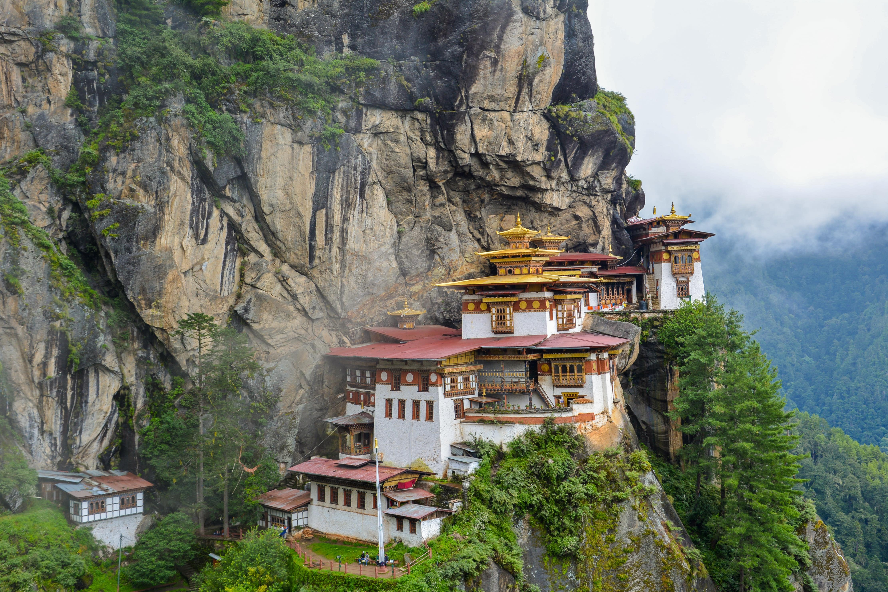
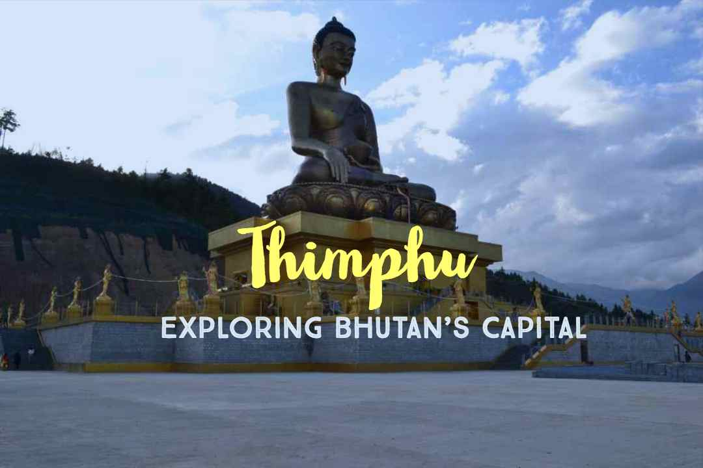
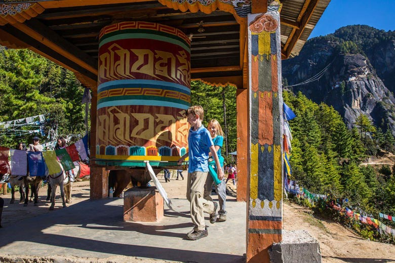

Fly into Himalayas with Druk Air, Bhutan's National Air Carrier. As the aircraft enters the Paro valley, look down and you will see the Paro Dzong on the hillside overlooking Paro Chu (river) with Ta Dzong, formerly a watchtower and now the National Museum, above it. Received by our representative at the airport and transfer to Thimphu, the modern capital town of Bhutan. Overnight at the hotel in Thimphu.

After breakfast, sightseeing in Thimphu valley including visit to the following: the National Library, housing an extensive collection of priceless Buddhist manuscripts; the Institute for Zorig Chusum (commonly known as the Painting School) where students undergo a 6-year training course in Bhutan’s 13 traditional arts and crafts. Later visit Textile and Folk Heritage Museum, a fascinating testimony of the Bhutanese material culture and living traditions.
After lunch, visit King's Memorial Chorten continuously circumambulated by people, murmuring mantras and spinning their prayer wheels. Construction of this landmark was the idea of Bhutan’s third king, His Majesty Jigme Dorji Wangchuk (“the father of modern Bhutan”) who has wished to erect monument to world peace and prosperity. Completed in 1974 after his untimely death, it serves both as a memorial to the Late King and as a monument to peace. Then, visit the government-run Handicrafts Emporium and local crafts shops, to browse through example of Bhutan's fine traditional arts. Here you can buy hand-woven textiles, thangkha paintings, masks, ceramics, slate and wood carvings, jewelry, interesting items made from local materials. Evening drive past Trashichhoedzong, “fortress of the glorious religion”. This is the center of government and religion, site of monarch’s throne room and seat of Je Khenpo or Chief Abbot. Built in 1641 by the political and religious unifier of Bhutan, Shabdrung Ngawang Namgyal, it was reconstructed in 1960s in traditional Bhutanese manner, without nails or architectural plans. Overnight at the hotel in Thimphu.

After breakfast drive to Paro en route visit Simtokha Dzong. This dzong, built in 1627 is the oldest in Bhutan. It now houses the Institute for Language and Culture Studies.
Afternoon in Paro, visit Ta Dzong, once a watchtower, built to defend Rinpung Dzong during inter-valley wars of the 17th century, Ta Dzong was inaugurated as Bhutan’s National Museum in 1968. Afterwards, walk down a hillside trail to visit Rinpung Dzong. Built in 1646 by Shabdrung Ngawang Namgyal , the first spiritual and temporal ruler of Bhutan, the Dzong houses the monastic body of Paro, the office of the Dzongda (district administrative head) and Thrimpon (judge) of Paro district. The approach to the Dzong is through a traditional covered bridge called Nemi Zam. Overnight at the hotel in Paro.
After breakfast drive up the valley to view the ruins of Drukgyel Dzong. It was from here that the Bhutanese repelled several invading Tibetan armies during the 17th century.
Then take an excursion to Taktsang Monastery, the most famous of Bhutanese monasteries. It is said that Guru Rinpoche arrived here on the back of a tigress and meditated at this monastery hence it is called “Tiger’s Nest”. The excursion to monastery takes about 5 hours for round trip. While return to Paro town visit en route Kyichu Lhakhang, one of the oldest and most sacred shrines of the Kingdom. Overnight at the hotel in Paro.

After breakfast day is at leisure or you can opt for – Nusa Lembongan (Optional) one of famous island in Bali which has its own beauty to that island is famous for the white sand beaches. Lembongan Island is also famous because of the atmosphere crystal clear beach and seagrass beds along the coast of the Lembongan Island. Indonesia is famous for its underwater life of one of its islands Bali. Overnight stay at the hotel.